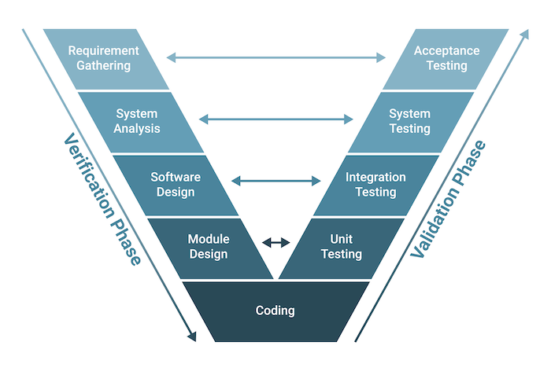

V-Shape
-
V-Shape
V-Shape rõhutab testimise ja kvaliteedi tagamise tähtsust kogu arendusprotsessi vältel.
Siin on mõned V-Shape põhiprintsiibid.
Testimine ei ole lihtsalt tegevus, mis toimub arendusprotsessi lõpus. Selle asemel on
testimine integreeritud arenduse elutsükli igasse etappi, alates nõuete kogumisest kuni
juurutamiseni.
Igal arendusprotsessi etapil on vastav testimise faas. Testimistegevused
planeeritakse paralleelselt arendustegevusega, et testimise toetamiseks oleks olemas
vajalikud ressursid.
V-mudel rõhutab defektide ennetamise olulisust, mitte nende tuvastamist ja parandamist
pärast nende avastamist.
Paneb suurt rõhku selgetele ja ülevaatlikele nõuetele. Ilma selge arusaamata sellest,
mida tarkvara peaks tegema, on võimatu välja töötada tõhusaid teste ega luua kvaliteetset
tarkvara.
Ei ole arendus ja testimine eraldiseisvad tegevused. Selle asemel on need tihedalt integreeritud
ning koostöö arendajate ja testijate vahel on kriitilise tähtsusega, et tagada tarkvara vastavus
nõutavatele kvaliteedistandarditele.
| Head |
Vead |
| Parandab kvaliteeti |
Jäik |
| Vähendab riske |
Aeganõudev |
| Suurendab efektiivsust |
Ressursimahukas |

allikad:
builtin.com